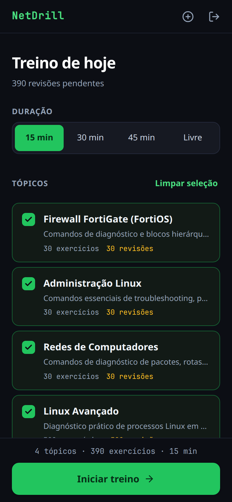
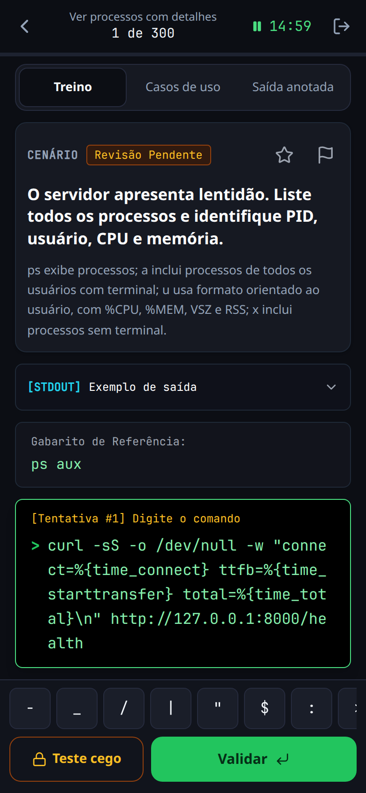
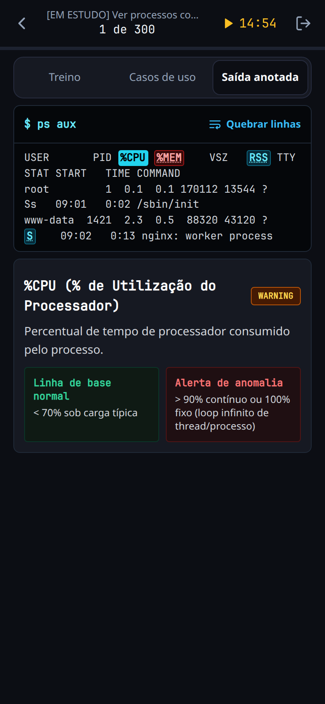
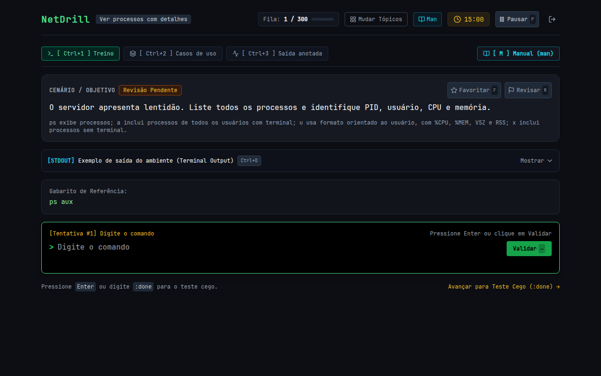

Redesenho mobile
Capturas da implementação em 390 × 844 px (mobile) e 1280 × 800 px (desktop). Fontes do protótipo aprovado em canvas/.

/
/?topics=…, aba Treino

Capturas da implementação em 390 × 844 px (mobile) e 1280 × 800 px (desktop). Fontes do protótipo aprovado em canvas/.

/
/?topics=…, aba Treino
